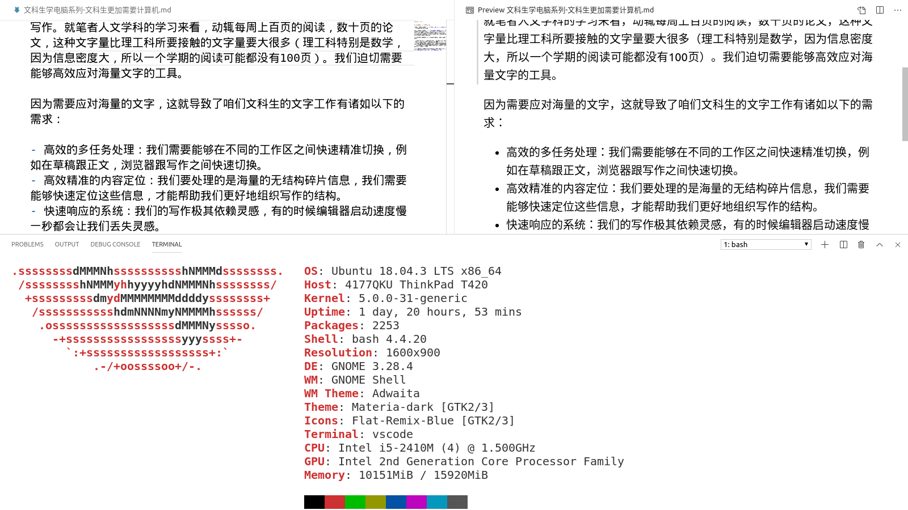

【文科生学电脑】为什么文科生更加需要计算机

咱们先从最反直觉的命题开始：文科生比理科生更加需要计算机。这将是贯穿本系列的中心思想。
文科生工作一个普遍的特征是：需要应对海量的文字，不论是阅读还是写作。就笔者人文学科的学习来看，动辄每周上百页的阅读，数十页的论文，这种文字量比理工科所要接触的文字量要大很多（理工科特别是数学，因为信息密度大，所以一个学期的阅读可能都没有100页）。我们迫切需要能够高效应对海量文字的工具。
因为需要应对海量的文字，这就导致了咱们文科生的文字工作有诸如以下的需求：
- 高效的多任务处理：我们需要能够在不同的工作区之间快速精准切换，例如在草稿跟正文，浏览器跟写作之间快速切换。
- 高效精准的内容定位：我们要处理的是海量的无结构碎片信息，我们需要能够快速定位这些信息，才能帮助我们更好地组织写作的结构。
- 快速响应的系统：我们的写作极其依赖灵感，有的时候编辑器启动速度慢一秒都会让我们丢失灵感。
因为这些需求，我们迫切需要顺手的工具来应对这些，只有有了好的工具，我们才可以忘记工具，而专注于写作内容本身。